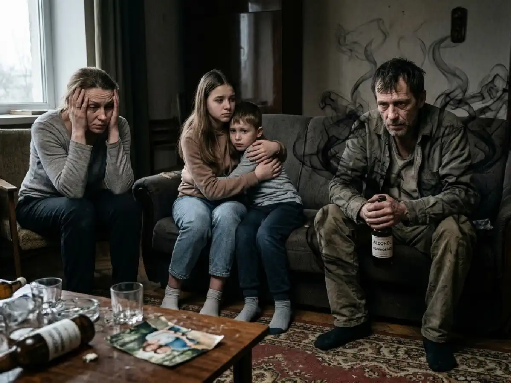

+38(068) 79 72 782
+38(068) 79 72 782Сім’я та залежність
Як вибудувати здорові стосунки


Безкоштовна консультація, працюємо цілодобово 24/7
Як вибудувати здорові стосунки

Алкогольна або наркотична залежність рідко зачіпає лише одну людину. Майже завжди вона впливає на всю сім’ю: змінюються стосунки, виникає напруження, порушується довіра, з’являються конфлікти та відчуття безпорадності. Родичі намагаються допомогти, але часто не знають, як діяти правильно. Залежність — це захворювання, яке потребує професійного лікування і підтримки з боку близьких. За правильного підходу сім’я може стати важливим ресурсом відновлення і допомогти людині повернутися до тверезого та стабільного життя.
Коли один із членів сім’ї починає зловживати алкоголем або наркотичними речовинами, поступово страждає вся система стосунків. Змінюється звичний ритм життя, виникають постійні переживання за стан близької людини, з’являється страх перед можливими наслідками вживання. Родичі можуть відчувати розгубленість, гнів, образу або сильну тривогу. Часто сім’я намагається впоратися з проблемою самостійно: переконує людину відмовитися від вживання, намагається контролювати її поведінку, приховує проблему від оточення або намагається мінімізувати наслідки. Однак без професійної допомоги такі спроби рідко призводять до стійкого результату. Залежність формується на фізіологічному і психологічному рівні, тому потребує комплексного підходу до лікування.
Крім того, тривале існування проблеми може призводити до серйозного емоційного виснаження родичів. Близькі люди починають жити у постійному стресі, що відображається на їхньому психологічному стані, роботі та стосунках усередині сім’ї. Іноді з’являється відчуття провини або переконання, що саме сім’я стала причиною залежності, хоча насправді розвиток захворювання пов’язаний із багатьма чинниками — біологічними, психологічними і соціальними. Особливо важко залежність переживають діти та подружжя. Вони можуть відчувати нестабільність, відсутність безпеки та емоційну дистанцію. У таких умовах формуються тривожність, недовіра до оточуючих та інші психологічні труднощі. Тому допомога часто потрібна не лише самій залежній людині, а й усій сім’ї.
Коли в сім’ї з’являється залежність, поступово змінюється звичний уклад життя. Родичі починають відчувати постійне напруження, тривогу і страх за близьку людину. Спочатку зміни можуть бути майже непомітними: людина частіше стає дратівливою, з’являються проблеми з настроєм, порушується режим сну або роботи. Однак з часом залежність починає все сильніше впливати на атмосферу в домі і на стосунки між членами сім’ї. Близькі люди можуть постійно перебувати у стані очікування чергової проблеми або конфлікту. Нерідко родичі починають хвилюватися за безпеку людини, за її здоров’я, за можливі наслідки вживання алкоголю або наркотиків. Це створює тривалий стрес, який поступово відображається на психологічному стані всієї сім’ї.
Втрата довіри стає однією з найболючіших проблем. Залежна людина може приховувати вживання, давати обіцянки, які не виконуються, або заперечувати наявність проблеми. З часом родичі починають сумніватися у її словах і відчувати розчарування. Конфлікти в сім’ї можуть виникати дедалі частіше. Емоційне напруження, втома і накопичені образи призводять до сварок, взаємних звинувачень і нерозуміння. Іноді родичі намагаються контролювати поведінку залежної людини, що лише посилює напруження і викликає опір.
Фінансові труднощі також нерідко стають частиною проблеми. Вживання алкоголю або наркотичних речовин може призводити до необдуманих витрат, боргів або втрати роботи. Це збільшує навантаження на інших членів сім’ї і викликає додатковий стрес. Відчуття сорому і бажання приховати проблему від оточуючих — ще одна поширена реакція. Деякі сім’ї намагаються не говорити про те, що відбувається, навіть із близькими друзями або родичами. Однак ізоляція часто лише посилює відчуття безвиході і позбавляє сім’ю можливості отримати підтримку.
З часом родичі можуть зіткнутися з емоційним виснаженням. Постійні переживання, спроби контролювати ситуацію і допомагати залежній людині призводять до психологічного вигорання. Люди починають відчувати втому, роздратування, безпорадність і втрату сил. З часом сім’я починає підлаштовуватися під поведінку залежної людини. Це може призводити до формування нездорових моделей стосунків, де все життя сім’ї починає обертатися навколо проблеми залежності. Родичі можуть змінювати свої плани, відмовлятися від особистих інтересів і повністю зосереджуватися на спробах контролювати ситуацію.
Співзалежність — це стан, за якого родичі надмірно залучаються до життя людини із залежністю і починають жертвувати власними інтересами, намагаючись контролювати або рятувати її. На перший погляд такі дії можуть здаватися проявом турботи і любові. Родичі намагаються захистити близьку людину від наслідків вживання, згладити конфлікти або вирішити проблеми, що виникають. Однак з часом така поведінка може призвести до того, що життя сім’ї починає повністю залежати від стану залежної людини. Найчастіше співзалежність проявляється у таких формах:
Постійний контроль може проявлятися у спробах стежити за тим, де перебуває людина, з ким вона спілкується, чи вживає алкоголь або інші речовини. Родичі можуть перевіряти телефон, обмежувати контакти або намагатися повністю контролювати її повсякденне життя. Незважаючи на благі наміри, такі дії рідко призводять до позитивних результатів і можуть викликати лише опір і конфлікти.
Спроби виправдовувати залежну людину перед оточуючими також є поширеною формою співзалежності. Родичі можуть пояснювати її поведінку втомою, стресом або складними життєвими обставинами. Іноді вони беруть на себе відповідальність за ситуації, що сталися, намагаючись захистити людину від критики або осуду. Приховування проблеми від інших людей також трапляється доволі часто. Сім’я може відчувати сором або страх перед громадською думкою, тому намагається не говорити про залежність навіть із близькими друзями або родичами. У результаті сім’я опиняється в ізоляції і позбавляється важливої соціальної підтримки.
Відчуття відповідальності за вчинки залежної людини також є характерною ознакою співзалежності. Родичі можуть вважати, що саме вони повинні контролювати ситуацію і запобігати негативним наслідкам. Це може проявлятися в оплаті боргів, вирішенні проблем на роботі або спробах виправити помилки залежної людини. При цьому власні потреби родичів поступово відходять на другий план. Люди можуть відмовлятися від відпочинку, особистих інтересів або спілкування з друзями, повністю зосереджуючись на спробах допомогти залежній людині. З часом це призводить до емоційного виснаження, втоми і відчуття безвиході.
Така модель поведінки формується поступово. Родичі щиро хочуть допомогти, але замість підтримки починають жити життям залежної людини, що лише посилює проблему. Коли сім’я постійно згладжує наслідки вживання, залежна людина може не відчувати повної відповідальності за свої вчинки, а отже — її мотивація до лікування знижується.
Підтримка сім’ї відіграє важливу роль у процесі лікування. Коли близькі люди розуміють суть проблеми і готові брати участь у відновленні, ймовірність успішної реабілітації значно зростає. Для людини, яка зіткнулася із залежністю, відчуття підтримки і прийняття з боку сім’ї може стати важливим джерелом мотивації та впевненості в тому, що зміни можливі. Нерідко саме родичі першими помічають ознаки залежності і починають шукати шляхи вирішення проблеми. Їх уважне ставлення і готовність говорити про те, що відбувається, можуть допомогти залежній людині усвідомити необхідність лікування. Важливу роль відіграє спокійний і поважний діалог, який допомагає знизити опір і страх перед зверненням по медичну допомогу. Сім’я може допомогти:
Мотивація до лікування часто стає першим і найскладнішим кроком. Родичі можуть м’яко і без тиску пояснювати важливість звернення до спеціалістів, розповідати про можливості лікування і підтримувати людину у прийнятті рішення. Іноді саме підтримка близьких допомагає людині зробити перший крок до одужання. Створення спокійної і безпечної атмосфери вдома також має велике значення. Конфлікти, постійні звинувачення або агресивний тиск можуть посилювати стрес і провокувати нові епізоди вживання. Навпаки, атмосфера розуміння і поваги допомагає людині почуватися впевненіше і зосередитися на відновленні. Підтримка тверезого способу життя включає зміну деяких звичок усередині сім’ї. Наприклад, відмова від вживання алкоголю у присутності людини, яка проходить лікування, уникнення ситуацій, що можуть спровокувати зрив, і підтримка нових здорових інтересів та захоплень.
Підтримка повинна бути спокійною і конструктивною. Тиск, звинувачення або погрози рідко дають позитивний результат. Коли розмова будується на критиці або емоційному тиску, залежна людина може сприймати це як напад і закриватися від діалогу. У результаті виникає ще більше напруження, а бажання звертатися по допомогу може лише знижуватися. Набагато ефективніше вибудовувати спілкування на основі поваги, терпіння і розуміння. Важливо пам’ятати, що залежність — це складне захворювання, пов’язане не лише з поведінкою людини, а й зі змінами у роботі нервової системи і психіки. Тому спроби «присоромити» або змусити людину відмовитися від вживання силою рідко призводять до стійкого результату. Корисні рекомендації для родичів:
Розмову про проблему краще починати у спокійній обстановці, коли людина перебуває у тверезому стані і готова до діалогу. Важливо говорити про свої переживання і почуття, а не звинувачувати чи критикувати. Наприклад, можна сказати, що вас турбує стан близької людини і ви хочете допомогти їй впоратися з труднощами. Пропозиція допомоги повинна звучати щиро і без тиску. Іноді залежній людині складно визнати проблему або звернутися по допомогу самостійно. Підтримка близьких може допомогти їй зробити перший крок і відчути, що вона не залишається сам на сам зі своєю проблемою.
Іноді дії близьких людей, спрямовані на допомогу, можуть навпаки підтримувати залежність. Це відбувається тому, що родичі намагаються захистити людину від негативних наслідків її поведінки і тим самим мимоволі знімають із неї частину відповідальності. У результаті залежна людина може не відчувати необхідності щось змінювати, адже багато проблем за неї вирішують інші. До поширених помилок належать:
Виправдання залежної людини часто проявляється у спробах пояснити її поведінку стресом, втомою або складними життєвими обставинами. Родичі можуть говорити оточуючим, що проблема тимчасова або незначна. Однак така позиція іноді заважає своєчасно визнати серйозність ситуації і розпочати лікування. Вирішення проблем залежної людини також може підтримувати руйнівну поведінку. Наприклад, родичі можуть виплачувати її борги, виправдовувати прогули на роботі або усувати наслідки конфліктів. Хоча такі дії здійснюються з бажання допомогти, вони можуть знижувати у людини відчуття відповідальності за власні вчинки.
Приховивання наслідків вживання — ще одна поширена помилка. Деякі сім’ї намагаються приховати проблему від друзів, колег або інших родичів, побоюючись осуду або сорому. Однак ізоляція часто лише посилює напруження всередині сім’ї і позбавляє її можливості отримати підтримку. Надмірний контроль також рідко приносить позитивний результат. Постійні перевірки, обмеження і спроби повністю керувати життям залежної людини можуть викликати опір, роздратування і нові конфлікти. У підсумку стосунки стають ще більш напруженими.
Агресивні конфлікти та емоційні спалахи також погіршують ситуацію. Постійні звинувачення, крики або погрози можуть посилювати стрес і відчуття безнадії як у самої залежної людини, так і у її родичів. Такі дії можуть знижувати мотивацію до лікування і закріплювати залежну поведінку. Коли наслідки вживання згладжуються або відповідальність перекладається на інших, у людини може не виникати відчуття необхідності змінювати своє життя.
Здорові межі допомагають зберегти баланс між підтримкою і відповідальністю. Родичі повинні розуміти, що вони не несуть відповідальності за вибір залежної людини. Кожна людина приймає власні рішення, і навіть найближчі люди не можуть повністю контролювати її поведінку або змусити відмовитися від вживання. Встановлення здорових меж допомагає уникнути емоційного виснаження і дозволяє сім’ї зберегти більш стійкі та спокійні стосунки. Коли родичі чітко розуміють, за що вони відповідають, а за що ні, знижується рівень напруження і з’являється можливість вибудовувати більш конструктивне спілкування. Повага до власних потреб означає, що родичі мають право піклуватися про свій фізичний і психологічний стан. Вони можуть продовжувати займатися роботою, спілкуватися з друзями, відпочивати і приділяти увагу своїм інтересам. Це допомагає зберігати внутрішні ресурси і не втрачати власне життя у спробах повністю контролювати ситуацію.
Відмова від тотального контролю також є важливою частиною здорових меж. Спроби постійно стежити за залежною людиною, перевіряти її дії або керувати її життям часто призводять лише до напруження і конфліктів. Натомість більш ефективними стають чесна розмова і чітке позначення власної позиції. Чітке позначення допустимої поведінки допомагає створити зрозумілі правила всередині сім’ї. Наприклад, можна домовитися про те, що вживання алкоголю або наркотичних речовин у домі є неприпустимим, або що агресивна поведінка не буде прийматися. Такі правила допомагають підтримувати безпечну атмосферу в сім’ї.
Готовність сказати «ні» руйнівним ситуаціям також відіграє важливу роль. Іноді родичі з почуття жалю або страху погоджуються на дії, які можуть лише погіршити проблему. Уміння відмовляти в таких ситуаціях допомагає зберегти повагу до себе і підтримує більш здорові стосунки. Такі межі допомагають зберегти психологічне здоров’я всієї сім’ї. Вони знижують рівень емоційного напруження, дозволяють родичам зберігати власну стійкість і водночас створюють умови, за яких залежна людина починає більше усвідомлювати наслідки своїх дій і необхідність змін.
Сімейна терапія є важливою частиною комплексного лікування залежності. Вона допомагає відновити комунікацію між родичами і змінити руйнівні моделі поведінки, які могли сформуватися за час існування проблеми. Залежність часто порушує довіру, викликає образи і непорозуміння, тому робота з сім’єю стає важливим етапом відновлення. Одним із основних завдань сімейної терапії є пояснення родичам природи залежності. Коли близькі люди починають розуміти, що залежність — це захворювання, а не просто прояв слабкості або відсутності сили волі, змінюється і ставлення до проблеми. Це допомагає знизити рівень взаємних звинувачень і перейти до більш конструктивної взаємодії.
Спеціалісти також допомагають сім’ї навчитися правильно підтримувати людину, яка проходить лікування. Родичі дізнаються, які форми допомоги дійсно можуть сприяти відновленню, а які, навпаки, підтримують залежну поведінку. Це дозволяє змінити звичні моделі спілкування і вибудувати більш здорові стосунки. Важливою частиною роботи є відновлення довіри. У період залежності в сім’ї часто накопичується багато образ, недомовленостей і емоційних травм. Під час терапії родичі отримують можливість відкрито обговорювати свої переживання, вчитися слухати одне одного і поступово відновлювати взаєморозуміння.
Сімейна терапія також допомагає зменшити кількість конфліктів. Спеціалісти навчають членів сім’ї навичкам спокійного спілкування, конструктивного вирішення проблем і поважного діалогу. Це особливо важливо у період відновлення, коли емоційна атмосфера в сім’ї може сильно впливати на стан людини, яка проходить лікування. Сімейна терапія часто стає важливим кроком до відновлення нормального життя. Коли вся сім’я бере участь у процесі відновлення, з’являється більше можливостей для зміцнення довіри, покращення взаєморозуміння і створення сприятливого середовища, яке підтримує тверезий і здоровий спосіб життя.
Іноді ситуація потребує термінової медичної допомоги. У таких випадках може знадобитися виклик нарколога додому. Така послуга дозволяє швидко отримати професійну допомогу, не відкладаючи лікування і не піддаючи людину додатковому стресу, пов’язаному з поїздкою до медичного закладу. Нерідко родичі стикаються із ситуаціями, коли стан залежної людини різко погіршується, і самостійно впоратися з проблемою стає складно. У таких випадках важливо не відкладати звернення по допомогу. Лікар-нарколог може оцінити стан пацієнта, провести необхідну діагностику і надати медичну допомогу прямо вдома.
Послуга виклику нарколога додому доступна у різних містах України. Наркологи клініки можуть оперативно приїхати до пацієнта і надати допомогу у таких містах як (Київ | Харків | Одеса | Дніпро | Львів | Запоріжжя | Черкаси). Сильна алкогольна інтоксикація може супроводжуватися слабкістю, порушенням координації, блюванням, сильним головним болем та іншими небезпечними симптомами. У таких випадках медична допомога допомагає стабілізувати стан людини і знизити ризик ускладнень.
Тривалий запій також є серйозним станом, який може призводити до вираженої інтоксикації організму, порушення роботи серця, нервової системи та інших органів. Лікар може провести детоксикацію, призначити необхідні препарати і допомогти організму швидше відновитися. Абстинентний синдром, що виникає після припинення вживання алкоголю або наркотичних речовин, може супроводжуватися тривожністю, безсонням, тремтінням, підвищеним тиском, прискореним серцебиттям та іншими неприємними симптомами. Медична допомога допомагає полегшити стан пацієнта і знизити ризик ускладнень.
Іноді залежність супроводжується різкими змінами поведінки. Людина може ставати агресивною, тривожною або дезорієнтованою. У таких ситуаціях допомога спеціаліста допомагає стабілізувати стан і запобігти можливим небезпечним наслідкам.
Лікар проводить діагностику стану пацієнта, надає медичну допомогу і за потреби рекомендує подальше лікування. Це може включати детоксикацію, медикаментозну підтримку, консультацію нарколога і рекомендації щодо подальшої терапії. У деяких випадках спеціаліст може запропонувати продовження лікування у клініці або участь у програмі реабілітації.
Після завершення лікування починається важливий етап — повернення людини до звичайного життя. У цей період підтримка сім’ї особливо важлива. Реабілітація не закінчується у момент виписки з клініки або завершення програми лікування. Навпаки, саме повернення до повсякденного життя може стати одним із найскладніших етапів для людини, яка намагається зберегти тверезість. Після тривалого періоду вживання або лікування людині необхідно заново вибудовувати звичний ритм життя, навчитися справлятися зі стресом без алкоголю або наркотичних речовин і відновлювати стосунки з оточуючими. У цей період близькі люди можуть стати важливим джерелом підтримки, впевненості та мотивації. Близькі можуть допомогти:
Створення спокійної і стабільної атмосфери вдома допомагає людині відчувати безпеку і емоційну підтримку. Надмірні конфлікти, тиск або постійні нагадування про минулі помилки можуть посилювати стрес і заважати відновленню. Набагато важливіше зосередитися на підтримці позитивних змін і поступовому відновленні довіри.
Підтримка нових здорових звичок також відіграє важливу роль. Це може бути дотримання режиму дня, заняття спортом, нові хобі або участь у корисній соціальній активності. Коли сім’я підтримує такі зміни, людині стає легше зберігати мотивацію і відчувати, що її зусилля помічають і цінують.
Залежність — це серйозне захворювання, яке впливає не лише на людину, а й на її близьких. Однак за своєчасного звернення по допомогу і підтримки сім’ї можливо подолати наслідки залежності і повернути стабільність у стосунки. Важливо пам’ятати, що відновлення — це процес, який потребує часу, терпіння і спільних зусиль. Якщо ви зіткнулися з проблемою алкогольної або наркотичної залежності, важливо не залишатися з цією ситуацією сам на сам. Професійна допомога допомагає стабілізувати стан людини, розпочати лікування і вибудувати подальший шлях відновлення. Наркологи клініки готові допомогти і відповісти на всі запитання. Ви можете отримати консультацію і викликати лікаря додому.
Телефон для консультації і виклику нарколога: +38(050-021-69-57)

Так, ми суворо дотримуємося повної конфіденційності на всіх етапах лікування. Інформація про пацієнта, діагноз та проходження терапії не передається третім особам. Звернення до нас не тягне за собою постановку на облік. Ви можете бути впевнені у безпеці та анонімності.
Програма лікування розробляється індивідуально після консультації з фахівцем. Враховуються вид залежності, її тривалість, фізичний та психологічний стан пацієнта. Такий підхід дозволяє підвищити ефективність терапії та знизити ризик зриву. Ми не використовуємо шаблонні рішення.
Так, ми супроводжуємо пацієнтів і після основного курсу лікування. Проводяться консультації, рекомендації щодо адаптації та профілактики рецидивів. За потреби можлива подальша психологічна підтримка. Це допомагає зберегти результат та повернутися до повноцінного життя.
Номер телефону:
+380 (68) 797 27 82
+380 (50) 021 69 57
Адресу наркологічного центра вашого міста уточнюйте за
телефоном
Працюємо: Київ, Одеса, Львів, Харків, Дніпро, Запоріжжя,
Черкасах, Чугуєві, Чорноморську, Кам'янському
Telegram: t.me/umbrellaplus
Графік работы: Цілодобово